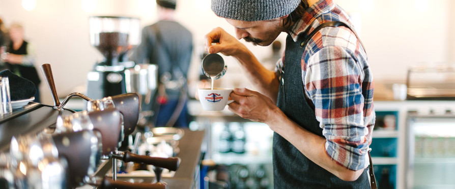
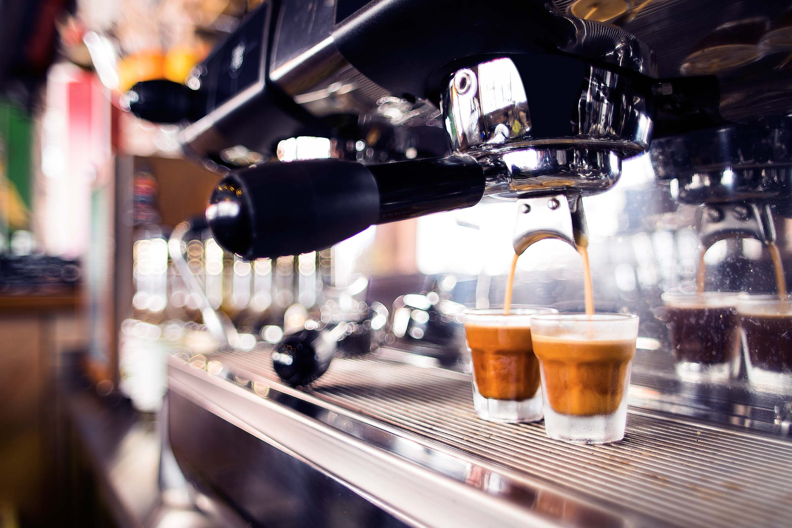
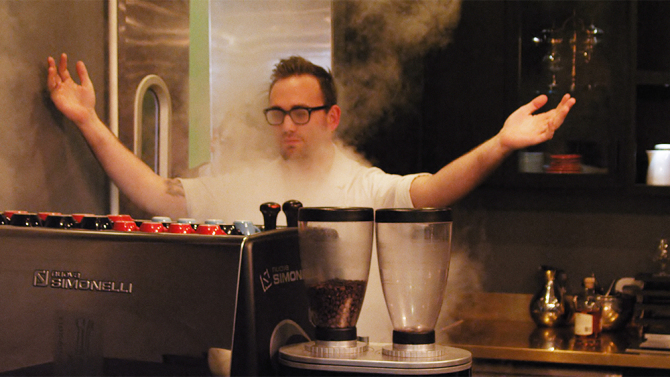

How to Become a Barista With No Experience
While brewing a delicious cup of coffee in a Keurig brewing system may make you feel like a barista, the reality of the job is more complicated than that. There are fancy machines to operate and complicated recipes to memorize. Not to mention latte art. However, the appeal of working in a local coffee shop remains. The cool ambiance, the smell of freshly ground coffee beans, the hip co-workers. Who hasn't dreamt of working as a barista? One small problem: you don't know the first thing about working as a real barista. Fear not. There is a path for you. Here are a few tips and tricks that will help you become a barista with absolutely no prior experience.
Know what the coffee shop is looking for
Most local coffee shops want you to submit a resume and cover letter for the position. These are some qualities that most managers want in their baristas:
1. Attention to detail and execution
Employers want to know that you’re going to make lattes and cappuccinos that not only look great but taste great. No easy task. That’s why you want to stress that you’re detail-oriented and want to make the perfect cup of coffee for every customer.
2. Cheerful and friendly
Every Barista has to deal with customers—especially cranky customers who haven't had their caffeine yet. A nice smile will go a long way in this job and will also increase the chance of a return customer.
3. Flexible and reliable
Most baristas have to work long shifts, often on weekends. Before you apply, make sure you’re ready to work late and show up early.
4. Team player
As a Barista, you’re going to have to work with and communicate with the staff and customers. People skills are a must.
Teach yourself the basics

1. Learn the lingo
Don't know the difference between a Latte Macchiato and a Flat White? Study up on the barista terminology. Treat it like SAT prep and create flashcards to help you memorize the recipes.
2. Watch videos
There's no need to enroll in an expensive course to learn how to use an espresso machine. With YouTube, the world of barista education is now at your fingertips. Learn how to make the perfect cappuccino from the 2012 World Barista Champion and find out how to make some awe-inspiring David Bowie latte art.
3. Practice at home
You know what they say, practice makes perfect. Search Craigslist and Ebay to find a cheap or used espresso machine, and then practice practice practice! If you are truly ready to become a coffee connoisseur, you'll want to have one of these around anyway.
Land your first barista job

Now that you are a coffee lingo expert and have all the drink recipes down cold, you are ready to go forth and become a Barista. Here are some tips for actually getting hired.
1. Become a regular
Coffee shop owners like to hire their customers. Pick a local coffee shop that you love and spend some time getting to know the owners and staff. After a few weeks, let them know that you're interested in working there. When a job opens up, you'll be the first to know about it.
2. Start as a cashier
Cashier and busser positions usually don't require any experience. Start in one of these positions at your favorite coffee shop, and then work your way up.
3. Work for free
If your dream coffee shop absolutely requires baristas to have previous experience, you can offer to work there for free for a few days. This will demonstrate your passion for the job and willingness to do whatever it takes to get it.
4. Search for opportunities that don’t require experience
When browsing barista job listings, read the qualifications section carefully. Some local coffee shops don't require previous experience and are willing to train.
5. Start out at a chain coffee shop
Chain coffee shops like Starbucks usually don't require previous experience. Start out with a job like this and then apply to your local coffee shop once you have 6 months of experience under your belt. In short, you can absolutely become a Barista in any local coffee shop without experience so long as you seem confident, knowledgeable, and eager to work. Print out your resume, put on that winning smile, and good luck!